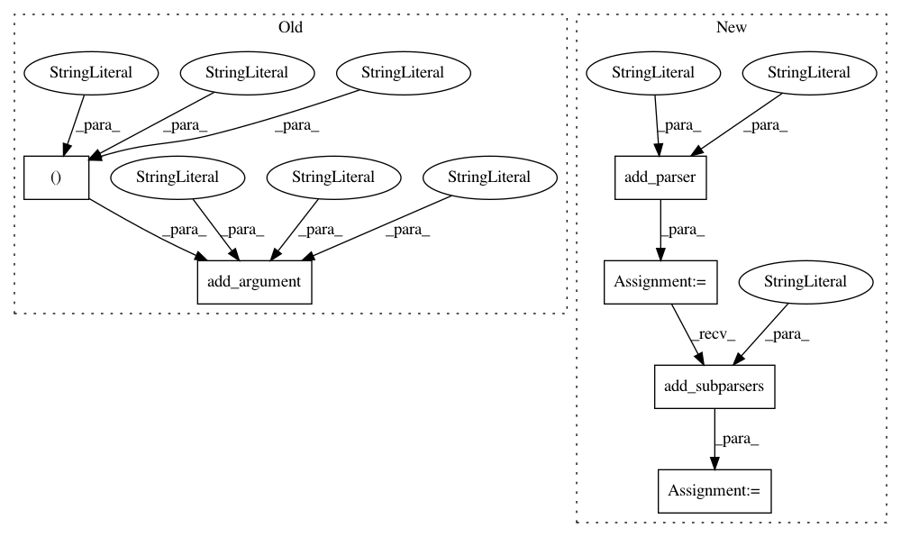

47f6b481964339b4a7ae8e15f3a3610b9722aeb6,cnvlib/commands.py,,,#,1452
Before Change
[Default: use the sample ID, taken from the file name])
P_export_bed.add_argument("--ploidy", type=int, default=2,
help="Ploidy of the sample cells. [Default: %(default)d]")
P_export_bed.add_argument("-x", "--sample-sex", "-g", "--gender",
dest="sample_sex",
choices=("m", "y", "male", "Male", "f", "x", "female", "Female"),
help=Specify the sample"s chromosomal sex as male or female.
(Otherwise guessed from X and Y coverage).)
P_export_bed.add_argument("--show",
choices=("ploidy", "variant", "all"), default="ploidy",
help=Which segmented regions to show:
"all" = all segment regions;
After Change
// export ----------------------------------------------------------------------
P_export = AP_subparsers.add_parser("export",
help=Convert CNVkit output files to another format.)
P_export_subparsers = P_export.add_subparsers(
help="Export formats (use with -h for more info).")
// BED special case: multiple samples"s segments, like SEG
def _cmd_export_bed(args):
In pattern: SUPERPATTERN
Frequency: 3
Non-data size: 6
Instances
Project Name: etal/cnvkit
Commit Name: 47f6b481964339b4a7ae8e15f3a3610b9722aeb6
Time: 2018-01-10
Author: eric.talevich@gmail.com
File Name: cnvlib/commands.py
Class Name:
Method Name:
Project Name: etal/cnvkit
Commit Name: f344df034cb674e198996da63d430287394242bd
Time: 2015-12-11
Author: eric.talevich@gmail.com
File Name: cnvlib/commands.py
Class Name:
Method Name:
Project Name: etal/cnvkit
Commit Name: 29db4abdbeb839340ac5b0caf934ebda93892934
Time: 2017-02-24
Author: eric.talevich@gmail.com
File Name: cnvlib/commands.py
Class Name:
Method Name: